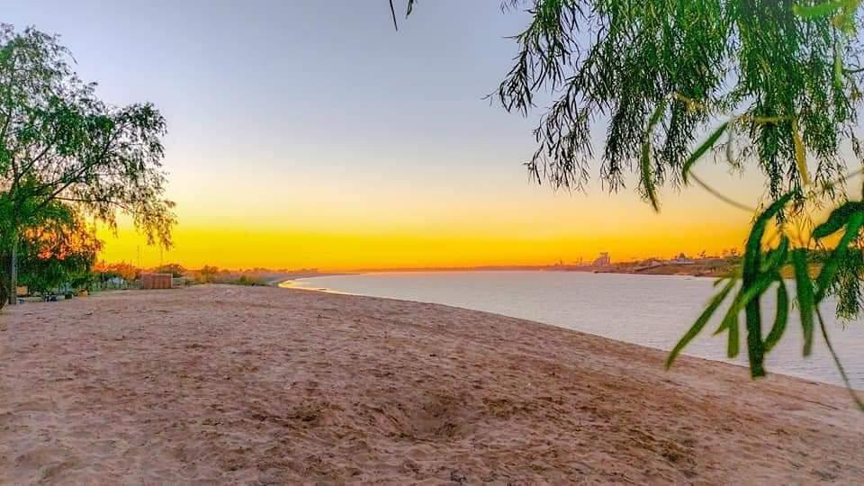
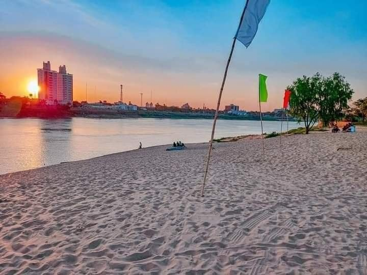
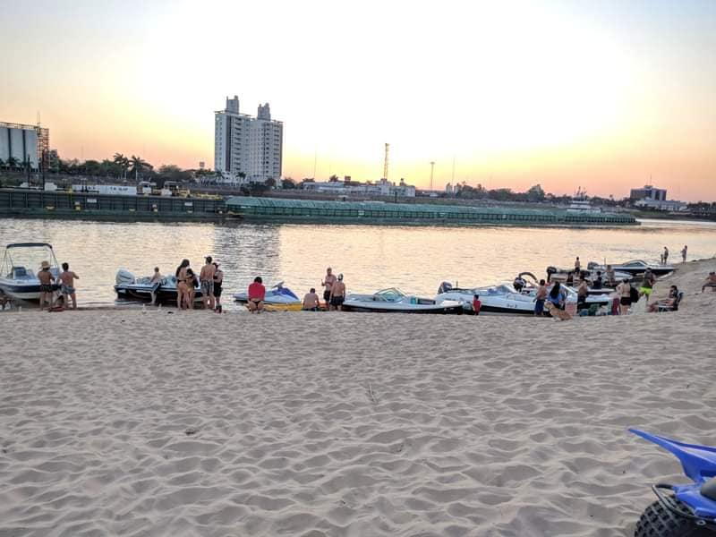
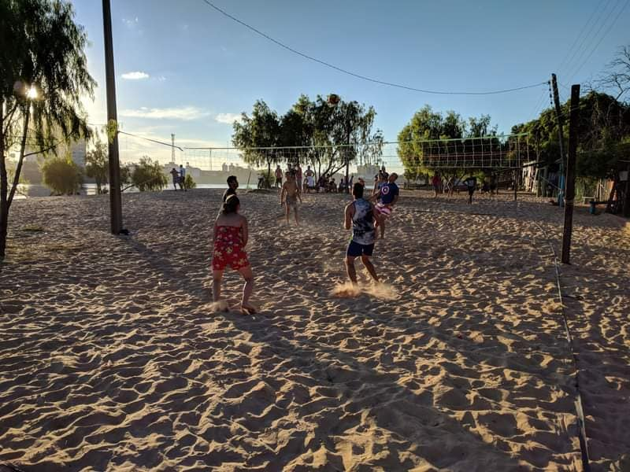

La playa Punta Arena se encuentra en el departamento de Ñeembucú, al borde del lago Ypacaraí. La playa cuenta con una extensa playa de arena, con un agua cristalina, donde se puede practicar el baño y diferentes actividades acuáticas. La playa se encuentra rodeada de muchos árboles, y tiene una infraestructura que incluye gimnasios, bares, restaurantes, tiendas y otros locales, que le dan un ambiente relajado y agradable.
Punta Arena es una de las playas más visitadas del país, y tiene un ambiente familiar, por lo que es ideal para una escapada familiar. Te recomiendo visitar la playa Punta Arena en verano, ya que es la época en la que se presenta el clima más cálido, y en la que hay mayor cantidad de eventos y festivales.
   